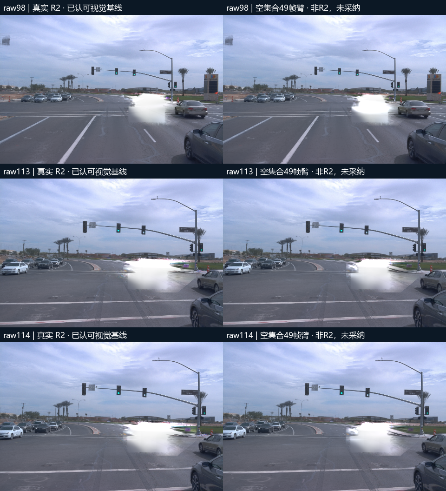
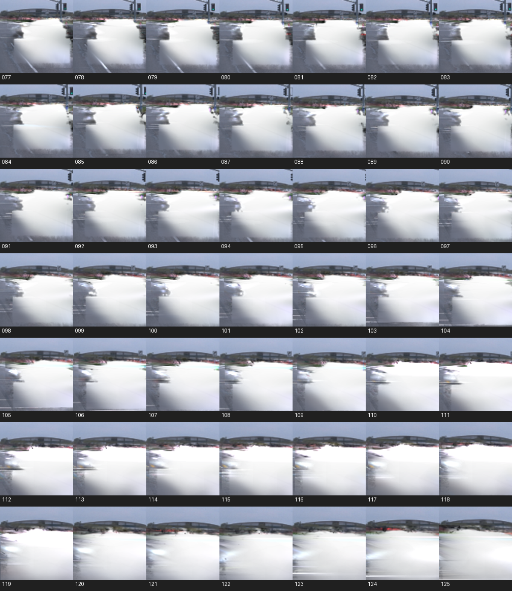

真实R2继承版已完成场景一49帧（raw77–125）。先复现原3锚点，再恢复同帧existing集合与原查询，全49帧完成GPU剥离及独立CPU浮点验收。raw98／113／114的行ID、查询、G、alpha和局部白底与原R2逐值一致，浮点差0。用户指出的旧pending与继承断开问题保留在下面的原因审计；当前结果不再采用空集合替代R2。
打开共享工作台：真实R2继承49帧 · 原三帧R2报告（原文件保留） · 本轮完成凭据 · 旧CPU原因审计（保留当时状态）
| 项目 | 实际结果 | 说明 |
|---|---|---|
| 覆盖与依赖 | 49／49帧；5个验证门通过 | 原接触证据、原photo分类existing种子；锚点先验，再扩到其余46帧 |
| 原R2回归 | 3锚点ID和查询相同；G／alpha／白底误差0 | 保留原初始化、彩噪查询、蓝框与框外existing合成 |
| 完整浮点验收 | 49帧通过；441张PNG逐一解码与编码核对 | 远端完整NPZ验收，本地仅保存完整ID、图像和紧凑证据 |
| 蓝框与合成 | 新增框外中心0；范围外像素差0；白底公式误差0 | 旧existing集合自带框外中心11–554行，单独记录，不混称为新增框内unknown |
| 候选及收敛 | 最终每帧6,662–26,166行；2–3次求值收敛 | 仍用原上限8次求值、alpha×T阈值1e-7 |
| 开销 | GPU 49帧79.84秒；CPU接触证据96.32秒；训练0 | 这是两项阶段实测耗时，不包含回归与其余接线开销 |
| 场景二／三 | 本轮未重做 | 共享平台保留此前非R2消融，不称其为真实R2继承结果 |
| 环节 | 真实R2 | 后续49帧臂（未采纳） |
|---|---|---|
| 初始删除集合 | 同帧已有候选existing | 空集合 |
| 查询 | 车身＋车底接触区＋existing浮点越界彩噪 | 只有车身＋车底 |
| 局部范围外基线 | existing原生输出 | 只去Actor的输出 |
三锚点蓝框与局部显示范围相同。下面的遗漏是原static行集合差，不能直接解释成车辆语义漏检率。R2自身仍是诊断候选算法，未成为自动语义真值。
| raw | R2已有候选 | R2总删除 | 空集合臂删除 | R2中有而后者漏掉 | 查询像素：R2→空集合臂 |
|---|---|---|---|---|---|
| raw98 | 9,961 | 24,835 | 22,214 | 2,621 | 4,043 → 3,721 |
| raw113 | 6,848 | 15,333 | 13,435 | 1,898 | 4,911 → 4,182 |
| raw114 | 6,442 | 14,378 | 12,418 | 1,960 | 4,967 → 4,200 |
R2既有集合中另有381／20／17行中心位于当前蓝框外。它们来自既有基线，不是本次新增；回归必须单列此项，不能隐瞒成“所有被删行都在框内”。新增unknown继续严格受蓝框约束。二维框外保护也不等于全局三维删除无影响。

AI查看了全49帧局部拼图及11帧完整图（raw77、82、84、86、87、90、93、98、101、113、114）。未发现明显跳帧或严重视觉失败；这是AI辅助核查，不替代用户人工验收。raw82–87、90、93–94、98、101、113–114仍可见局部浅暗边或品红／绿色细边，101和113–114较明显。不能将细纹仍在的结果描述成完全纯白。
接触查询区与整个query内亮度小于0.2的像素计数均为0，但接触区平均alpha仍为0.338–0.548；跨界高斯仍贡献。这个阈值只用于排查深色残留，不是语义召回率、去影成功率或逐帧稳定性的证明。白底采用真实剥离后的G＋(1−alpha)×白色，仅在限定范围显示；框外使用同帧existing。它是局部空洞诊断，不是补景或永久语义身份写回。
查看全部49帧局部拼图 · 查看重点完整帧 · AI核查记录（非人工验收） · 逐帧残留与候选统计

原R2重放门 · 接触区证据门 · 原种子锚点门 · 49帧种子门 · 继承渲染锚点门 · 远端全浮点独立验收 · 网页Canvas接线验收
当前等待用户检查49帧效果。场景二三尚需沿本轮验证过的R2继承链补齐原始证据并单独回归，不能复用空集合臂冒充R2。所有旧图与旧审计保留，新增结果未覆盖参考。